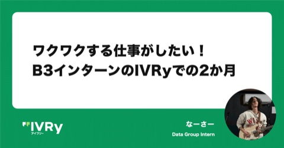
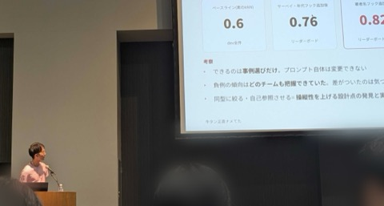

長谷川 永将
Nagamasa Hasegawa
🌅 Be the poet of your life.
ABOUT
所属
一橋大学 ソーシャル・データサイエンス学部 3年
社会計算言語学研究室
社会計算言語学研究室
領域
自然言語処理
資格
ワインエキスパート(日本ソムリエ協会)
GITHUB
github.com/green-caviar
AWARDS
-
2026.8
YANS2026 ハッカソン ICL部門(事例設計) 優秀賞
チーム参加。few-shot事例の設計を担当。
EXPERIENCE
-
2024.4 -
一橋大学 ソーシャル・データサイエンス学部
-
2025.8 - 2026.8
株式会社ShuSen(バックエンドエンジニア)
-
2026.4 -
一橋大学 社会計算言語学研究室
-
2026.9 -
株式会社IVRy(データグループ インターン)
WRITING

2026.11 · note ワクワクする仕事がしたい！ B3 インターンの IVRy での 2 か月 IVRy のデータグループでのインターン2か月の振り返り。
2026.8 YANS2026に参加してきました 初参加のYANS2026。ハッカソンICL部門 優秀賞の記録と学び。